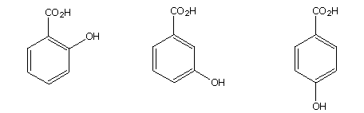

The three isomeric hydroxybenzoic acids are shown below. These compounds all have two acidic functions, the carboxylic acid and the phenolic hydroxyl group, Each compound will therefore have a pKa1 and a pKa2. The pKa of benzoic acid itself is 4.20. The pKa of phenol is10.00. Enter an estimated pKa for each of these in the designated answer box. The stronger acid should be pKa1. Answers will be judged correct if they are within 0.2 pKa units of the observed value.

For an analysis of these pKa's Click Here.